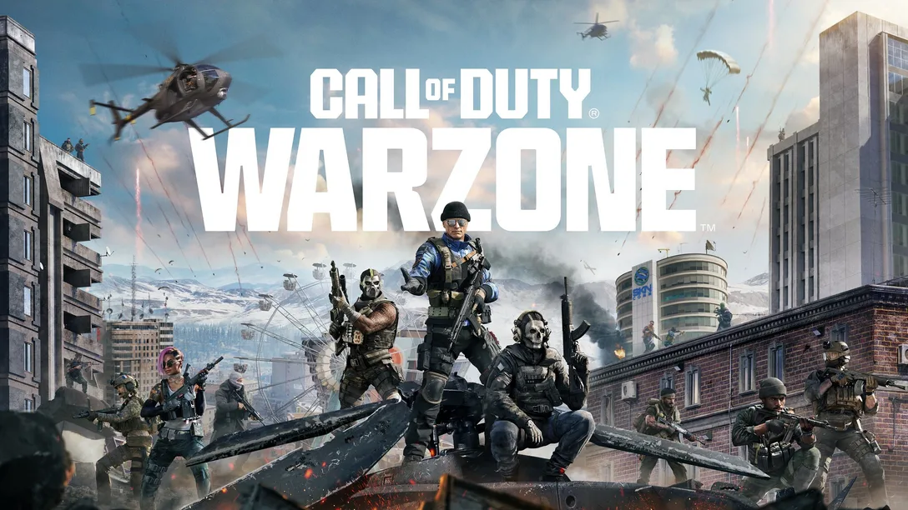

Free Fire
Desarrollador: Garena
Género: Battle Royale
Plataformas: Android, iOS

Free Fire es un videojuego de supervivencia estilo battle royale muy popular en dispositivos móviles. En cada partida, 50 jugadores son lanzados a una isla donde deben buscar armas y recursos para sobrevivir, mientras el área segura del mapa se reduce poco a poco.
Lo que destaca de Free Fire es su jugabilidad rápida, controles intuitivos y partidas cortas que lo hacen ideal para jugar desde el celular. También incluye modos por equipos, personalización de personajes, eventos especiales y una comunidad activa.
Aunque sus gráficos no son tan avanzados como otros juegos de consola, su optimización permite que funcione en casi cualquier teléfono. Es ideal para quienes buscan acción rápida y partidas intensas sin necesidad de un equipo potente.
Sitio oficial
Xbox
Fabricante: Microsoft
Tipo: Consola de videojuegos y plataforma en línea

Xbox no es solo una consola, sino una plataforma completa para disfrutar de videojuegos de alta calidad. Desde su primera versión hasta las actuales Xbox Series X|S, ha evolucionado ofreciendo gráficos avanzados, rapidez de carga y una experiencia de juego fluida.
Su servicio en línea, Xbox Game Pass, permite acceder a cientos de juegos por una suscripción mensual. Además, su integración con PC y la nube ha ampliado las posibilidades de juego para los usuarios.
Xbox es una excelente opción para quienes buscan juegos de alta calidad, ya sea en solitario o en línea, con títulos icónicos como Halo, Forza, Minecraft y muchos más.
Sitio oficial
Call of Duty
Desarrollador: Activision
Género: Shooter en primera persona (FPS)
Plataformas: PC, Xbox, PlayStation, móviles

Call of Duty es una de las sagas más famosas de juegos de disparos. Con modos de campaña, multijugador en línea y battle royale, ofrece una experiencia intensa y realista. Sus entregas más populares incluyen títulos como Modern Warfare, Black Ops y Warzone.
Destaca por su jugabilidad fluida, armas realistas, mapas detallados y la posibilidad de competir con jugadores de todo el mundo. Además, sus campañas ofrecen historias cinematográficas que atrapan desde el primer momento.
Para los fanáticos de la acción, estrategia y adrenalina, Call of Duty es una opción casi obligatoria. También está disponible en versión móvil con controles adaptados y partidas rápidas.
Sitio oficial